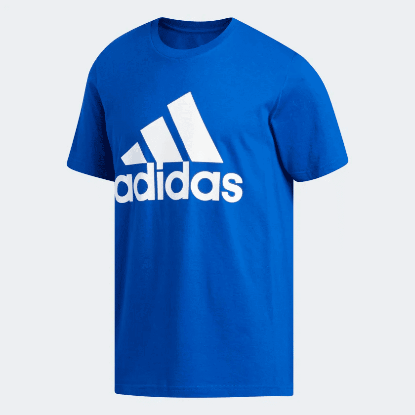

Tenis Deportivos Adidas
Q850
Descripción
Tenis deportivos Adidas de alta calidad con tecnología de amortiguación avanzada. Perfectos para running, entrenamiento en gimnasio y actividades deportivas en general. Diseño moderno con materiales transpirables que mantienen los pies secos y cómodos. Suela de goma resistente con tracción superior. Sistema de cordones para ajuste personalizado. Disponibles en tallas 35 a 45.